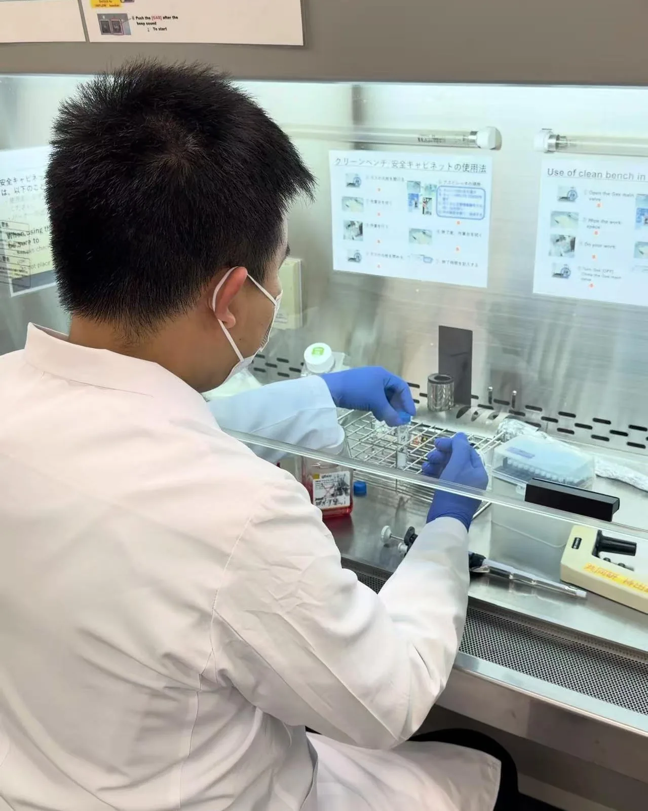
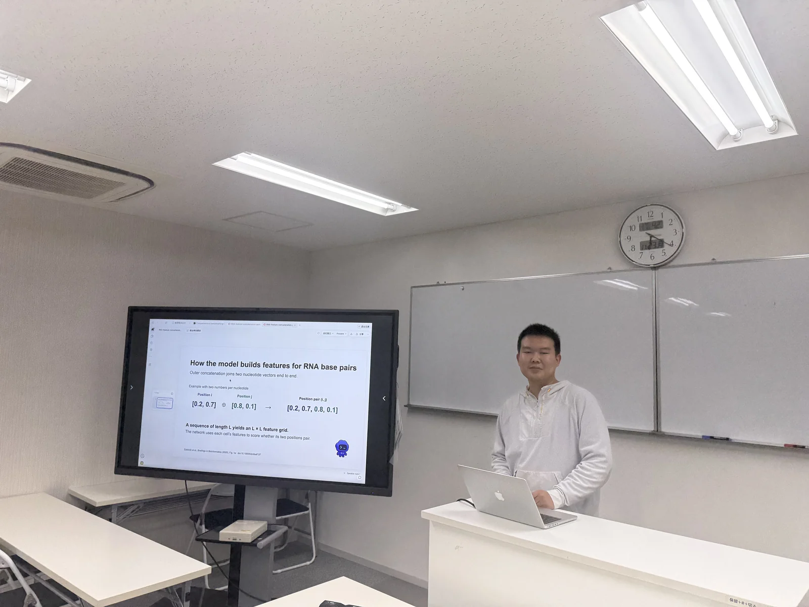

找到问题
结合学科兴趣与学习基础，认识领域中的研究问题。
QUESTION02 / THE RESEARCH JOURNEY
从建立问题意识，到有条理地解释自己的发现，逐步熟悉科研的思考方式。
结合学科兴趣与学习基础，认识领域中的研究问题。
QUESTION学习文献阅读与数据思维，理解工具与研究目标的关系。
UNDERSTAND在实践中观察、比较与讨论，学习用证据检验自己的想法。
EXPLORE梳理研究过程，清晰说明发现、局限与下一步的问题。
COMMUNICATE03 / RESEARCH IN PRACTICE
从计算环境到实验操作，记录学习与探索中的具体时刻。

GPU / COMPUTING
统一的 GPU 计算环境，支持相关课题的数据处理、模型训练与结果分析。把更多精力放在问题、方法与验证上。

CODE / DATA / DISCOVERY
梳理代码、运行实验、观察结果，让研究思路在一次次实践中逐步清晰。

LIFE SCIENCE / LAB EXPERIENCE
在细胞培养相关操作中学习实验步骤，将课堂知识连接到实际观察与记录。

WET LAB / UNIVERSITY RESEARCH
走进大学研究室，在安全柜内动手完成实验操作。从无菌操作到试剂与样本处理，在真实的科研现场体会规范与严谨。
湿实验 · 无菌操作 · 研究室实践
READ / THINK / PRESENT
从读懂文献，到把思路讲清楚。在发表练习中梳理内容、组织表达，让理解逐步转化为清晰的讲述。
文献理解 · 内容梳理 · 口头表达
RESEARCH / ENGLISH / PRESENT
用英语讲解研究思路，在课堂发表中练习梳理内容、说明方法与组织表达。
研究理解 · 英语讲解 · 发表练习照片记录实际学习与研修经历，具体实践内容结合课题与学习安排确定。